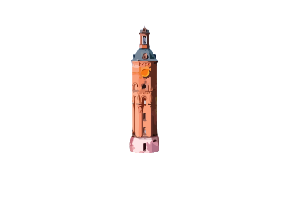
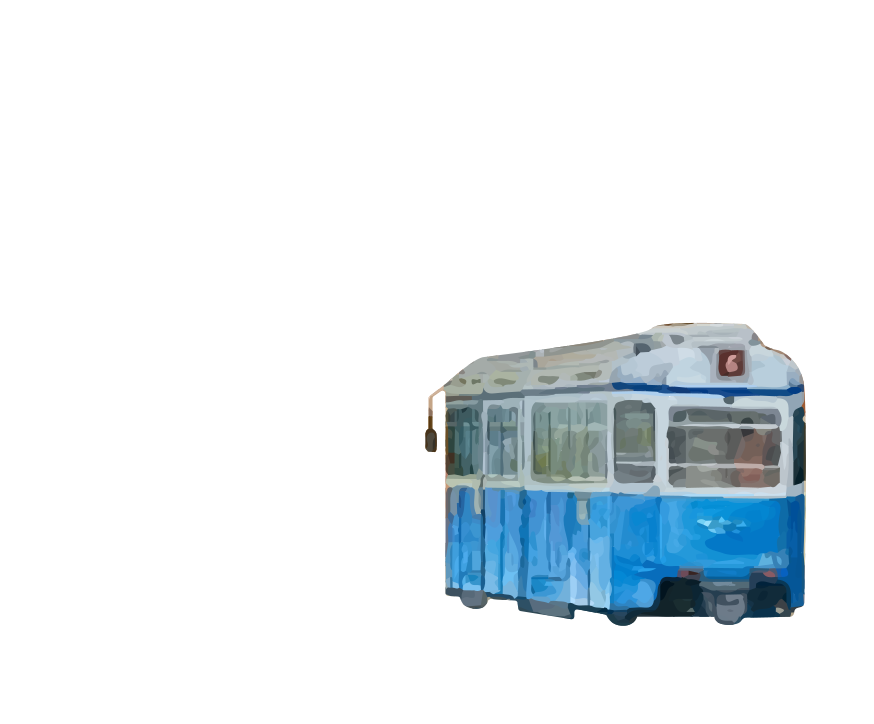

Символіка
Візитна картка міста

Водонапірна вежа — історична споруда на Європейській площі у місті Вінниця, споруджена 1912 р. Використовувалась як оглядова вежа та каланча. З 1985 року реконструйована та виконує функцію музею. Статус пам'ятки місцевого значення має від 17 лютого 1983 року. Від 2000 року, згідно із рішенням міської ради, вежа внесена до переліку міської символіки. Будівля башти перебуває на балансі Вінницького краєзнавчого музею.
Герб Вінниці
Водонапірна вежа — історична споруда на Європейській площі у місті Вінниця, споруджена 1912 р. Використовувалась як оглядова вежа та каланча. З 1985 року реконструйована та виконує функцію музею. Статус пам'ятки місцевого значення має від 17 лютого 1983 року. Від 2000 року, згідно із рішенням міської ради, вежа внесена до переліку міської символіки. Будівля башти перебуває на балансі Вінницького краєзнавчого музею.
Прапор Вінниці

Він червоного кольору, обрамлений лиштвою з білими трикутниками, а всередині полотнища – зображено Герб Вінниці. Червоний колір Прапора Вінниці немає нічого спільного з радянським минулим. Прапор Вінниці затверджено 16 травня 1993 року, червоний колір символізує мужність, хоробрість і безстрашність, а білий - чистоту.
Трамвай!
